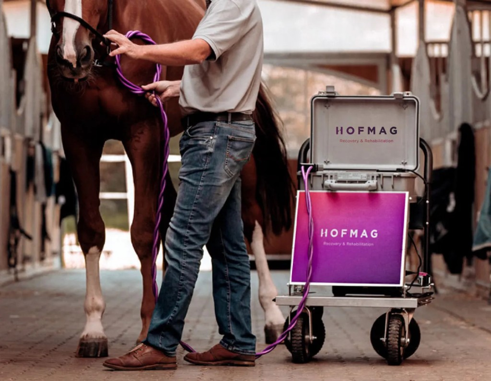

Hofmag

Next-generation pulsed electromagnetic field (PEMF) therapy to support recovery and rehabilitation. Hofmag is used to accelerate healing, relax muscles, and maintain the horse’s readiness for demanding work. FEI permitted.
For the performance horse in intensive training, regular sessions support daily wellness balance—helping the body recover between work and stay supple. It is a cornerstone of our horse wellness programme at Yelan Dressage Club.